Let’s edit the homepage with Wordpress Blocks.
First we will implement the home page. Let’s break down a set of Wordpress blocks which could comprise this layout…

Steps
1. Change the Cover background to the Hyrule image

Pop up tools appear…

These will vary depend on context of the block which is selected.
Click on the kebab menu and Remove Block.
You can change the image with
Pop-up -> Replace -> Upload
The inspector on the right will change depending on the context of the selected block. Here you can set properties
Inspector -> Block

Let’s squish down the image in
Inspector -> Block -> Dimensions -> 400 px
Note, you can also set properties for the Theme for this page as well, which is how you can constrain content and turn on or off headers or footers.
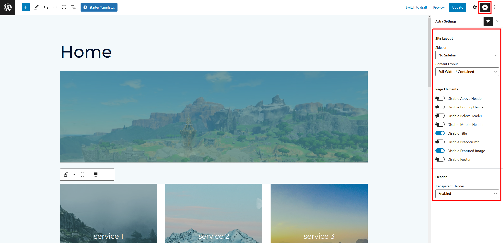
We may need to come back to this one in a bit, but for now the defaults should be good for our page.
Remember to frequently save with update, and preview your page in a new tab.


2. Lets add a text and image block…


Let’s add a column


This will allow two areas to drag and drop items.
On the left, we will drag in an icon, on the right some paragraphs. Copy the text from XD
To make the bow icon reasonably sized…
Inspector -> Block -> Image Dimensions -> 50 x 50
Also, center it by selecting the image
Pop-up tools -> Change Alignment -> Align center
And in the column
Pop-up tools -> Change Vertical Alignment -> Align Middle
You can also scale up the title of the text in
Text -> Inspector -> Typography -> Medium
Save and inspect

In your preview, see how this looks on mobile…

Let’s take a break from the block editor and hop into the Astra editor to set up our header and footer.
3. Changing our header logo and menu


Changing our footer is a little bit more complicated. We need to use the theme’s footer customizer. We likely won’t get quite to the point we want to, but that’s okay…
You can see the actual footer, as well as the blocks which make it below


We have three tasks: update the copyright, add the ‘social media’ icons, and update some colors…
First, we’ll clean up the second row. Remove all widgets and collapse to one column


Do the same for the bottom with color: #206A5D
Fix our copyright, editing the text and setting the color to white and center it


We’ll add an HTML element in the second row, and update the image


By editing the HTML, we could easily add some links to the images, but we won’t worry about this for now.
Reminder - add link to image.
** Hit publish to update! **

5. Appointment Booking
In previous years we did a contact form, which matches our design, (this info will be left after this section, for your info). This year, instead, we will use a booking system to book tours, to explore installing and using plugins.
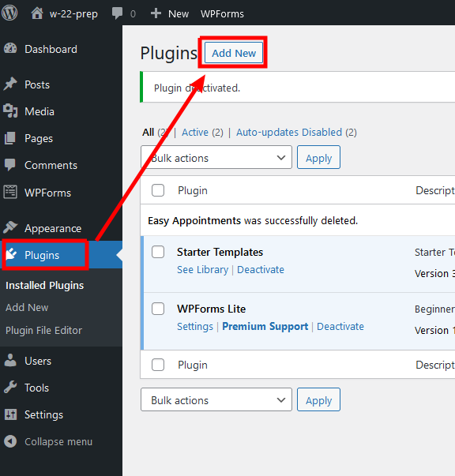
- Install and activate Easy Appointments
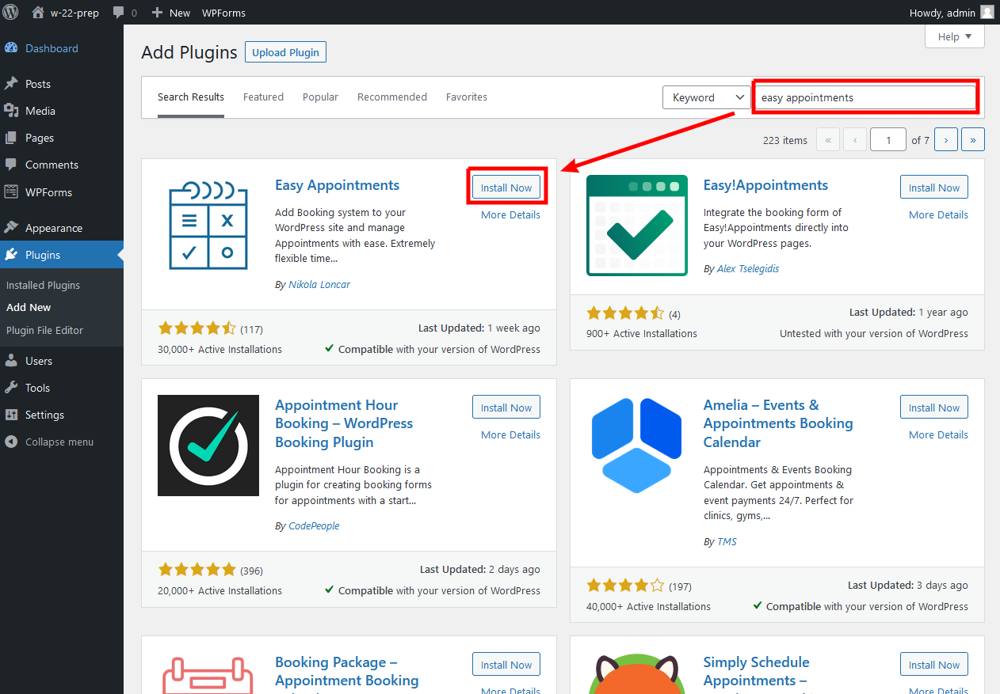
This is a plugin created for taking bookings. It can be found here, with documentation here.
- Plugins typically have their own interfaces for editing. You can get to its settings through the admin dashboard:
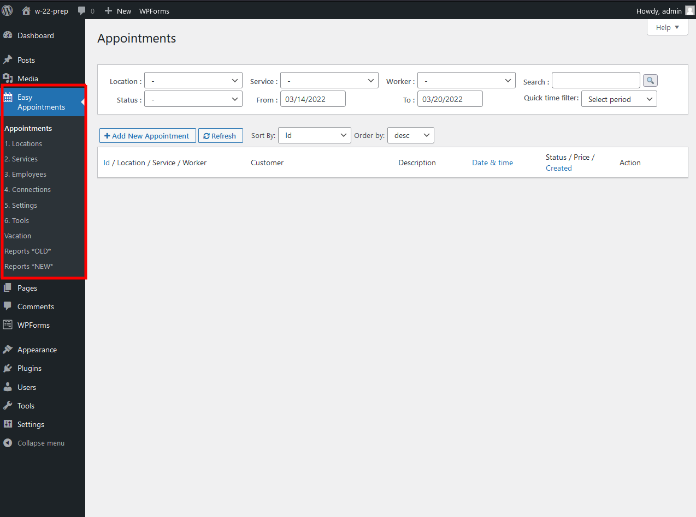
Often, with plugins, you need to read the docs to figure out they work. This plugin allows places, like Salons, to book appointments. The data model for an appointment includes:
Location (Where is the service offered?)Employee (Who is doing the service?)Service (What is being offered?)
- An appointment slot combines a
Connection between each of these three, as well as the times they occur.
- So, first we must set this up, for our appointment to work.
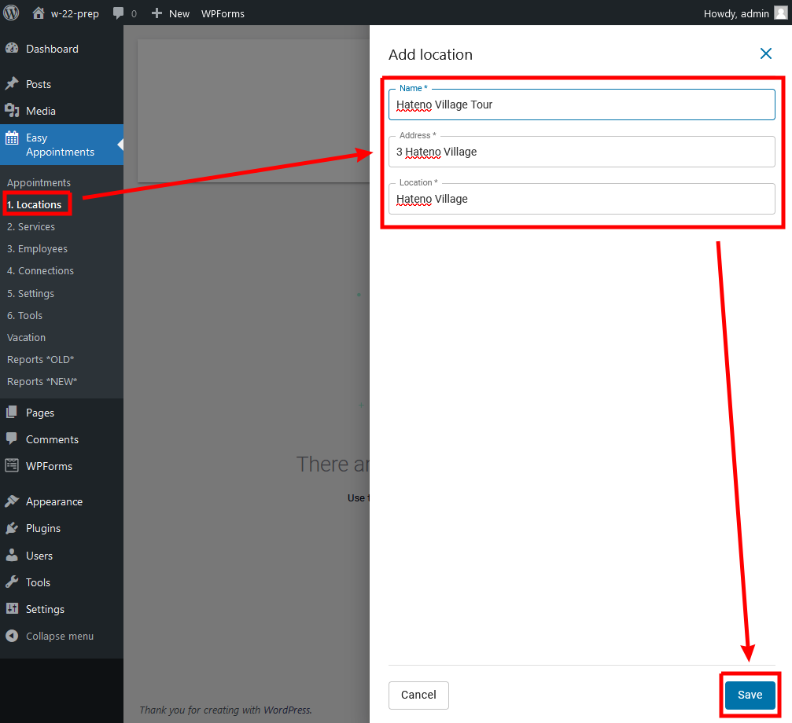

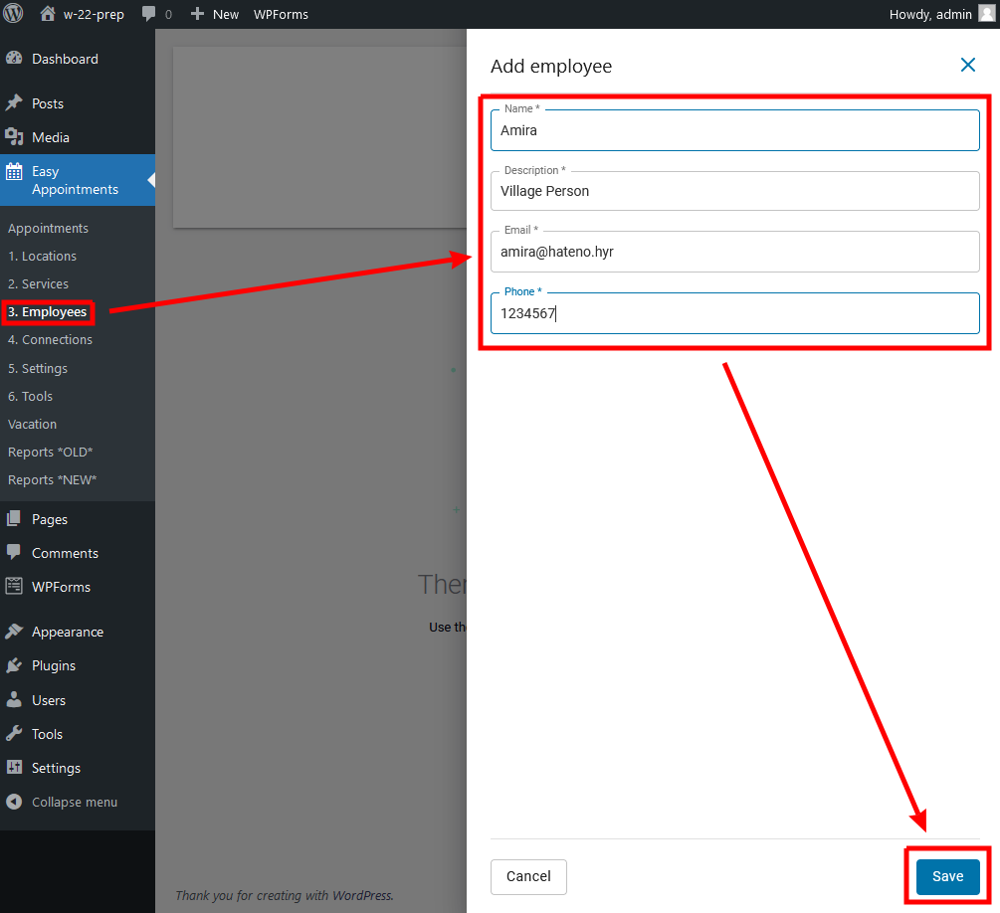
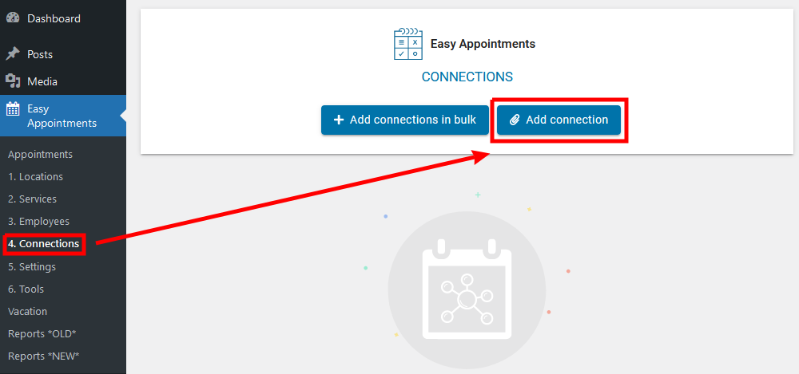
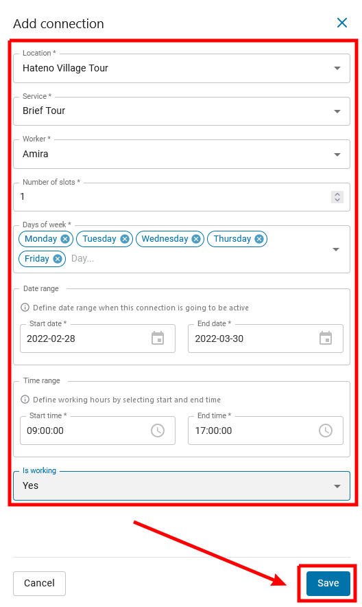
-
Finally, we may want to adjust some settings:
-
In particular, I want to auto-confirm appointments
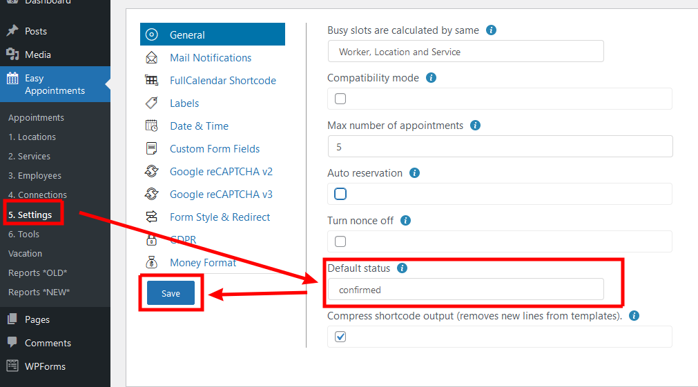
-
Newer plugins typically provide a Wordpress Block to add directly to your site, however, older once might only be accessible through a shortcode, which will customize the appearance of the plugin on the page.
-
I found these settings which I like:
[ea_bootstrap width="800px" scroll_off="true" layout_cols="2" worker="1" location="1" service="1"]
We can add it to the page with a shortcode block
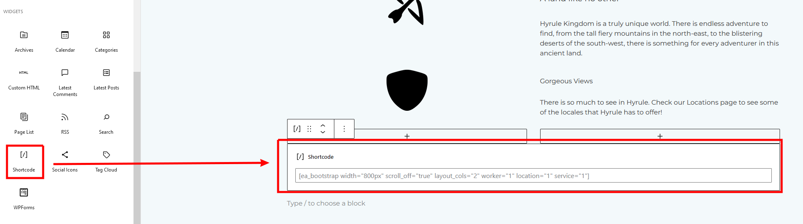
Unfortunately changes are not “What you see is what you get” (WYSIWYG), so we need to preview our page to see the changes.
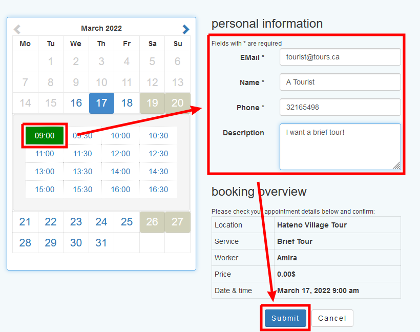
When we refresh we can see the slot is gone:
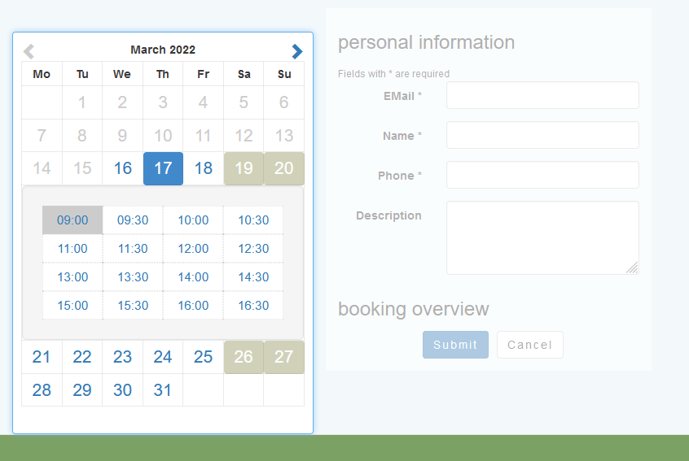
Finally, we can view our appointments from the Wordpress admin:
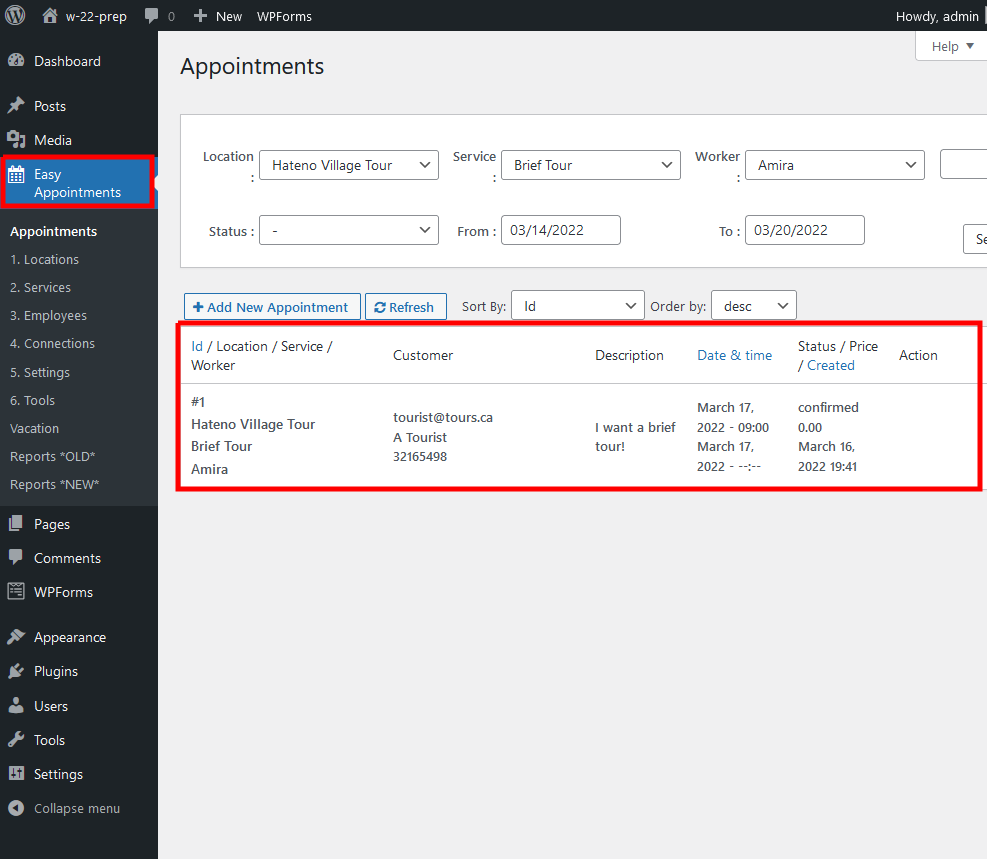
This is likely not the best booking plugin, but this gives you an idea of how to find and install a plugin, learn how to use it, and get going with it!
Let’s finish the landing page off with a contact form:
Go back to editing the page, and remove the remaining gallery stuff from our template page.
Start with a group block which allows us to add a background color
Group -> Inspector -> Block -> Background Color -> #F1F1E8
Inside the group add a WPForms,
We’ll use a WPForms plugin, which was downloaded with the starter template. Set it to the contact form. We’ll add some text above, and then edit the form from another area.


There’s lots of cool things we can do here, but for now we’ll simply set the form as we like.


Finally, ensure the email is set up properly.
 )
)
We have a complete functional page.

In the next section we’ll add a blog page.